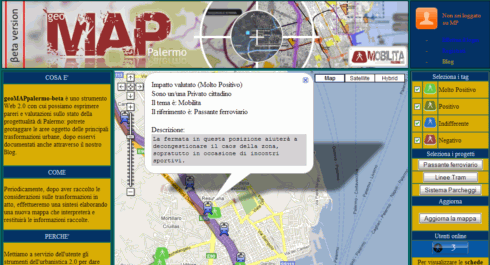
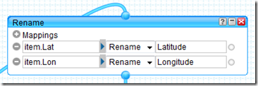
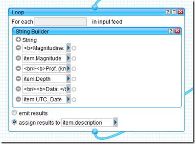
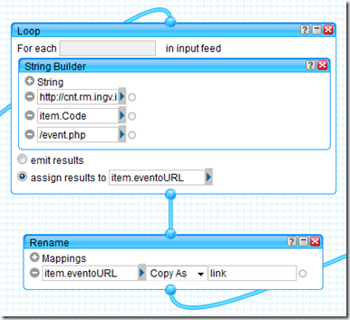
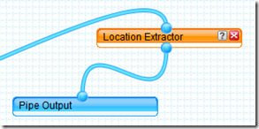
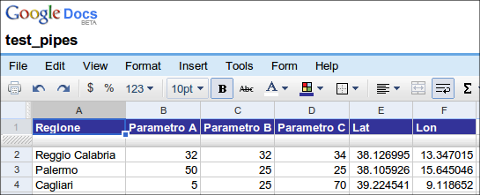
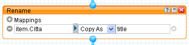
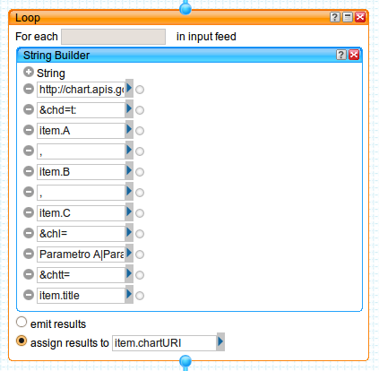
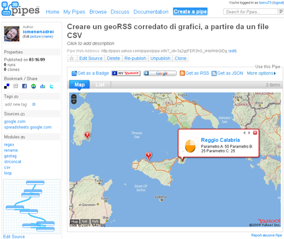
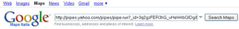

29 ottobre, 2010 | di Antonio Falciano
Il processo di liberazione dei dati pubblici procede abbastanza lentamente in Italia, nonostante le prime lodevoli iniziative in tal senso (dati.piemonte.it, CKAN Italiano, Linked Open Camera), mentre in altri Paesi (USA e UK in primis) si tratta di un fenomeno già ampiamente consolidato, tanto da rivoluzionare radicalmente il tradizionale modo di intendere il rapporto tra cittadini e Pubblica Amministrazione. Si veda, ad esempio, il portale Challenge.gov, dove i vari dipartimenti esecutivi ed agenzie federali americani lanciano delle vere e proprie sfide ai cittadini sulle questioni più disparate, che vanno dall’ambiente alla sanità, dall’economia alla tecnologia, a fronte della risoluzione delle quali sono previsti premi di natura economica.
fenomeno già ampiamente consolidato, tanto da rivoluzionare radicalmente il tradizionale modo di intendere il rapporto tra cittadini e Pubblica Amministrazione. Si veda, ad esempio, il portale Challenge.gov, dove i vari dipartimenti esecutivi ed agenzie federali americani lanciano delle vere e proprie sfide ai cittadini sulle questioni più disparate, che vanno dall’ambiente alla sanità, dall’economia alla tecnologia, a fronte della risoluzione delle quali sono previsti premi di natura economica.
Challenge.gov is a place where the public and government can solve problems together.
Il clamoroso ritardo del Belpaese in materia di Open Data è imputabile a diversi fattori. Da un lato, persiste di fatto l’assenza di una forte e concreta volontà politica di innescare tale processo in tempi brevi. Dall’altro, tuttavia, si comincia a registrare una graduale presa di coscienza del notevole impatto positivo che la liberazione dei dati prodotti dalla PA è potenzialmente in grado di produrre in termini di trasparenza dell’azione amministrativa e, al tempo stesso, come valida opportunità di sviluppo economico nei vari settori dell’IT. Ampio merito va dato alla Regione Piemonte, che con il suo portale dati.piemonte.it, rappresenta finora l’unica PA italiana che, pur non essendo obbligata a farlo (come argomenta Gerlando Gibilaro in un suo recente post su InDiritto), ha predisposto un banco di prova utile per mostrare effettivamente cosa si può fare con i dati grezzi e qual è il loro potenziale intrinseco ancora tutto da esplorare. A tal proposito, recentemente il portale si è arricchito di un’ulteriore sezione dedicata ai casi d’uso dei dati finora rilasciati, ancora piuttosto limitati in numero, ma non per molto visto che i tempi sono più che maturi…
Infatti, dopo essere rimasti a guardare a lungo cosa accadeva oltremanica o oltreoceano, è giunto finalmente il momento di tradurre questa opportunità in azione! Pertanto, al di là delle etichette, civic hacker, hacktivisti o civil servant di tutta Italia mettiamoci anche noi in gioco, “sporchiamoci” le mani con gli open data e affrontiamo la nostra sfida per l’innovazione e lo sviluppo. Ne va di mezzo anche la reputazione del nostro estro creativo che, da sempre, ci invidia tutto il mondo!
Gli open data piemontesi sul turismo…
All’esordio di dati.piemonte.it, i primi dataset resi disponibili non erano caratterizzati da forte connotazione geografica. Oggi, invece, grazie al recente rilascio dei dati relativi al settore del turismo, è possibile cominciare a ragionare in termini di localizzazione di attività produttive, nella fattispecie di strutture ricettive, e di rappresentazione all’interno di un’applicazione di web mapping, utilizzando un approccio maggiormente legato al territorio rispetto a quello prettamente illustrativo adottato in questo post. Nel dettaglio, sto riferendomi ai dati “Anagrafica esercizi – ricettività”, contenenti l’elenco delle quasi 5000 strutture ricettive piemontesi censite nel 2009, per ognuna delle quali è fornito l’indirizzo (via e comune), alcuni recapiti, la tipologia, l’eventuale qualifica (numero di stelle) e alcuni indicatori di capacità ricettiva (numero di camere, letti e bagni).

Data cleansing e faceted navigation…
Scaricati i dati di interesse, questi si presentano come un file di estensione .7z comprendente, a sua volta, due file .csv, di cui uno contenente i dati veri e propri e l’altro dei metadati. Fin qui tutto ok! Aprendo entrambi i file, tuttavia è possibile notare delle strane sequenze di caratteri (es. +AC0-, +AC1-, +Aog-, …): esse rappresentano la codifica di alcuni caratteri speciali (es. lettere accentate) derivanti dalla conversione dei dati grezzi nel formato CSV a partire dalla sorgente di dati originaria… Emerge chiaramente la necessità di dover ripulire questi dati e, piuttosto che utilizzare un comune editor di testo o un foglio di calcolo, ne ho approfittato per testare Google Refine (ex Freebase Gridworks), software con cui avevo visto fare cose davvero strabilianti in queste screencast.
 Si tratta, infatti, di un potente strumento per ripulire i dati grezzi (data cleansing), in grado di renderli consistenti, collegarli a basi di dati esterne come Freebase, aggregarli con dati provenienti da altre fonti, convertirli nei formati necessari da utilizzare in altri strumenti e contribuire ad alimentare, a loro volta, altre fonti di dati. Ma non è finita qui… Pur essendo utilizzato all’interno di un browser, Google Refine non è un servizio web, ma un’applicazione desktop eseguibile sul proprio computer che consente ampia libertà nel flusso di lavoro, prevede un meccanismo di “undo/redo” persistente (anche in caso di crash della macchina!) e supporta diverse modalità avanzate di ricerca e di filtraggio dei dati mediante facet (faccette). In particolare, la “faceted navigation“ (“navigazione guidata” o “ricerca a faccette“) è quel metodo di ricerca incrementale per parole chiavi, molto utilizzato ad es. nei portali di e-commerce, che guida l’utente in tempo reale verso le informazioni ricercate attraverso una serie di piccoli e semplici passaggi, garantendogli ampia libertà di scelta.
Si tratta, infatti, di un potente strumento per ripulire i dati grezzi (data cleansing), in grado di renderli consistenti, collegarli a basi di dati esterne come Freebase, aggregarli con dati provenienti da altre fonti, convertirli nei formati necessari da utilizzare in altri strumenti e contribuire ad alimentare, a loro volta, altre fonti di dati. Ma non è finita qui… Pur essendo utilizzato all’interno di un browser, Google Refine non è un servizio web, ma un’applicazione desktop eseguibile sul proprio computer che consente ampia libertà nel flusso di lavoro, prevede un meccanismo di “undo/redo” persistente (anche in caso di crash della macchina!) e supporta diverse modalità avanzate di ricerca e di filtraggio dei dati mediante facet (faccette). In particolare, la “faceted navigation“ (“navigazione guidata” o “ricerca a faccette“) è quel metodo di ricerca incrementale per parole chiavi, molto utilizzato ad es. nei portali di e-commerce, che guida l’utente in tempo reale verso le informazioni ricercate attraverso una serie di piccoli e semplici passaggi, garantendogli ampia libertà di scelta.
I dati sono stati quindi ripuliti dai vari refusi presenti, effettuando operazioni di sostituzione in maniera batch (in caso di errore, come accennavo prima, esiste fortunatamente la possibilità di annullare le modifiche) e controllando, infine, la congruenza dei risultati ottenuti tramite le comode facet e i filtri di testo. I dati così ottenuti sono stati quindi esportati in formato CSV ed, infine, importati e pubblicati in un Google Spreadsheet.
Un problema di geocoding…
Occupandomi di sistemi informativi geografici, il mio interesse nei confronti di questo dataset è scaturito dal fatto che ogni struttura ricettiva è dotata di indirizzo (non solo il comune o la provincia di appartenenza) e che quindi, ai fini della sua rappresentazione su mappa, si presta bene ad essere risolto come un classico problema di geocoding, ovvero di determinazione delle coordinate geografiche (latitudine e longitudine) a partire dagli indirizzi dei punti di interesse (POI). A tal fine, esistono diversi servizi web (geocoder), liberi o proprietari, caratterizzati da diverso grado di copertura, accuratezza ed eventuali restrizioni d’uso, che si occupano di convertire gli indirizzi in coordinate.
Dovendo effettuare tale operazione per migliaia di indirizzi e desiderando automatizzare il processo, ho scelto di utilizzare questo servizio di Google, che consiste in una procedura guidata per la generazione batch dei valori di latitudine e longitudine a partire da un Google spreadsheet, contenente almeno due attributi: un identificatore univoco e l’indirizzo dei punti di interesse. Effettuato il geocoding e verificato che questo sia andato a buon fine, l’accuratezza dell’operazione dipenderà fortemente dalla qualità e soprattutto dal grado di capillarità degli indirizzi che diamo in pasto al geocoder. Per intenderci, mentre nei centri urbani sarà possibile individuare con buona approssimazione le coordinate dei numeri civici, d’altro canto risulterà alquanto improbabile determinare la posizione accurata di un rifugio alpino!
A valle di questa operazione, ho esportato gli identificativi e le coordinate così ottenute all’interno di un foglio di calcolo sul mio pc, manipolandole in funzione del particolare formato richiesto dal framework che mi accingevo ad utilizzare. Successivamente, ho collegato le coordinate alla tabella dei dati originari sfruttando l’identificativo univoco come attributo comune ed ho quindi nuovamente esportato e pubblicato i dati in Google Spreadsheet.
Il framework utilizzato…
 Una volta sistemati i dati, il passo successivo consiste nella progettazione e nell’implementazione dell’applicazione web da utilizzare per la loro rappresentazione. A tal proposito, la scelta fin da subito è ricaduta sullo strepitoso SIMILE Exhibit, un framework per la pubblicazione di pagine web caratterizzate da una forte interazione con i dati, che utilizza funzionalità di ricerca e di filtraggio basate ancora una volta sul concetto di “faceted navigation” e che consente di riprodurre agevolmente visualizzazioni interattive dei dati sotto forma di tabelle, thumbnail, mappe, grafici e timeline (come ad esempio ci aveva mostrato Andrea Borruso nel suo post scritto a seguito del terremoto in Abruzzo), senza richiedere il setup di database e di altre tecnologie server-side, nè tanto meno il possesso di skill avanzati di programmazione.
Una volta sistemati i dati, il passo successivo consiste nella progettazione e nell’implementazione dell’applicazione web da utilizzare per la loro rappresentazione. A tal proposito, la scelta fin da subito è ricaduta sullo strepitoso SIMILE Exhibit, un framework per la pubblicazione di pagine web caratterizzate da una forte interazione con i dati, che utilizza funzionalità di ricerca e di filtraggio basate ancora una volta sul concetto di “faceted navigation” e che consente di riprodurre agevolmente visualizzazioni interattive dei dati sotto forma di tabelle, thumbnail, mappe, grafici e timeline (come ad esempio ci aveva mostrato Andrea Borruso nel suo post scritto a seguito del terremoto in Abruzzo), senza richiedere il setup di database e di altre tecnologie server-side, nè tanto meno il possesso di skill avanzati di programmazione.
In particolare, il formato di dati che SIMILE Exhibit accetta in ingresso è JSON se la sorgente di dati risiede sullo stesso server dell’applicazione, JSONP negli altri casi. Tra le varie alternative a disposizione, è possibile importare dati da un Google spreadsheet, seguendo queste indicazioni.
Pertanto, dopo aver letto un po’ di documentazione e spulciato il codice di alcuni esempi, ho provato a caricarci sopra l’intero dataset delle strutture ricettive piemontesi. Ahimè… mi sono scontrato con le uniche effettive controindicazioni all’utilizzo di queste API JavaScript, ovvero la limitazione della memoria cache dei browser in cui sono temporaneamente immagazzinati i dati e l’accettabilità del tempo di attesa in fase di caricamento. Trattandosi semplicemente di una proof of concept, ho deciso quindi di ridurre la mole dei dati in Google Refine, filtrando solo la provincia torinese e ripubblicando il tutto su Google Docs. In definitiva, il risultato ottenuto è il seguente (per accedere all’applicazione cliccare sull’immagine):

Nel dettaglio, l’applicazione “Where to sleep in Turin” consente la ricerca delle strutture ricettive della provincia torinese mediante l’utilizzo di:
- tre facet di ricerca di testo sul comune, la denominazione e l’indirizzo delle strutture ricettive;
- una “cloud facet” sulla tipologia;
- una “filter facet” sulla categoria delle strutture dotate di tale qualifica;
- e, infine, tre “slider facet” per controllare l’intervallo di valori dei parametri di capacità ricettiva.
Tra le varie modalità alternative di visualizzazione offerte da Exhibit, sono presenti:
- una thumbnail “STRUTTURE RICETTIVE” al fine di poter consultare in maniera descrittiva ed aggregata i risultati man mano che si restringe il campo della ricerca;
- una mappa nella quale visualizzare l’ubicazione delle strutture ricettive e poterne interrogare gli attributi
- ed, infine, tre scatterplot in cui si pongono reciprocamente in relazione i parametri di capacità ricettiva e dove, ancora una volta, è possibile interrogare le singole strutture su grafico.
")
In particolare, gli scatterplot presenti nell’applicazione non hanno una finalità strettamente legata alla ricerca delle strutture ricettive, piuttosto vogliono lasciar immaginare e quindi pregustare quanto di buono si possa fare con strumenti come SIMILE Exhibit. In questa applicazione, infatti, le correlazioni individuabili tra i vari parametri esaminati scaturiscono banalmente dalla tipologia di struttura (ad es. se la struttura è un albergo, il numero di bagni per posti letto si aggirerà generalmente attorno al valore 0.5, mentre se si tratta di un campeggio sarà decisamente minore). Diversamente, se al posto di questi dati ci fossero stati, ad esempio, quelli relativi alla concentrazione di un inquinante e all’incidenza di determinate patologie (a tal proposito, si veda questo post), allora la potenza e l’immediatezza di tale modalità di rappresentazione dei dati potrebbe acquistare decisamente tutto un altro spessore ed utilità sociale. Lascio spazio alla vostra immaginazione…
E non è finita qui! Ne approfitto per segnalare la presenza di TANTO alla seconda edizione di ITN 2010, evento che si terrà a Torino l’11 e il 12 novembre 2010 (in concomitanza con le giornate conclusive di ASITA, sic!), in cui il nostro hacktivista Pietro Blu Giandonato interverrà con “I ‘luoghi’ degli open data: dove e come trovare in Italia i dati per sviluppare applicazioni location aware“ (slide) nella sessione “Domanda (potenziale) e offerta (implicita) di informazione geolocalizzata: gli anelli mancanti”. In particolare, uno dei temi chiave della sessione è rappresentato dai “Dati geografici del settore pubblico o free, consolidati e facilmente accessibili, potenzialmente utilizzabili per la costruzione di significative applicazioni basate su informazione geolocalizzata” e credo che quelli utilizzati nell’applicazione appena mostratavi ne sono un più che valido esempio. Come si dice da queste parti …stay tuned! 
Parlano di “Where to sleep in Turin”:
Posted in Dati, osgeo | 9 Comments »
12 luglio, 2010 | di Antonio Falciano
E’ appena trascorso un mese dall’entrata in esercizio del primo portale Open Data italiano, dati.piemonte.it, il quale è stato accolto favorevolmente dagli entusiasti sostenitori italiani del movimento Open Data ed addirittura classificato come portale governativo di prima categoria dal gruppo PSI (Public Sector Information) della Commissione Europea, in quanto garantisce l’accesso diretto ai dati, analogamente a data.gov.
Pur trattandosi di una versione beta, rappresenta indubbiamente una pietra miliare che dimostra la fattibilità dell’Open Data anche in Italia, nonostante le difficoltà di cui si accennava in questo recente post.
Ma vediamo in dettaglio di cosa si tratta. La pagina di accesso al portale si presenta con una grafica semplice ed accattivante su cui campeggia in primo piano il principio di fondo dell’iniziativa, una vera e propria dichiarazione di intenti in perfetto stile Government 2.0 ed in completo accordo con il senso della Direttiva 2003/98/CE del Parlamento europeo:
I dati pubblici sono di tutti
I dati in possesso della Pubblica Amministrazione sono un patrimonio informativo prezioso per la società e l’economia. La Regione Piemonte intende metterli a disposizione di cittadini e imprese per stimolare un nuovo rapporto fra pubblico e privato e favorire lo sviluppo di iniziative imprenditoriali.
A valle di questa esaltante premessa, seguono immediatamente pochi ma efficaci menù che rimandano ai contenuti del portale, dopodiché si va direttamente al sodo, accedendo direttamente ad un piccolo assaggio dei dati grezzi finora messi a disposizione, ad un estratto delle discussioni più recenti nel blog ed, infine, ad una sezione dedicata al riuso dei dati pubblici, dotata di una presentazione multimediale esplicativa sull’argomento.
Curiosando all’interno della sezione Dati, è possibile osservare che:
- al momento sono presenti solo alcuni set di dati, tuttavia assicurano che a questi se ne aggiungeranno progressivamente degli altri, anche su richiesta degli utenti;
- i dati grezzi sono descritti da metadati (informazioni sui dati);
- sono resi disponibili in formato CSV e, di conseguenza, sono consultabili mediante un qualsiasi editor di testo;
- sono aggregati a scala provinciale e, talvolta, comunale;
- è facile verificare come siano indicizzati nei principali motori di ricerca e quindi siano di facile reperibilità anche all’esterno del portale;
- infine, sono corredati di un contratto di licenza in cui si afferma chiaramente che la Regione Piemonte ne detiene la titolarità e ne “autorizza la libera e gratuita consultazione, estrazione, riproduzione e modifica [...] da parte di chiunque vi abbia interesse per qualunque fine, ovvero secondo i termini della licenza Creative Commons – CC0 1.0 Universal” (dominio pubblico).
Benissimo! Siamo certamente ancora distanti dalla mole impressionante di contenuti presenti in data.gov e data.gov.uk, tuttavia sono largamente rispettate in sostanza le indicazioni del Manifesto stilato da The Guardian, contenente a mio avviso un insieme minimo di principi pienamente condivisibile.
Il rilascio dei dati grezzi prodotti dalla PA – in formato aperto e con licenze che ne consentono il riuso – può produrre effetti benefici tanto nella trasparenza dei processi decisionali delle amministrazioni, quanto nella qualità dei servizi e nell’economia immateriale che vi ruoterebbe attorno. In particolare, i raw data costituiscono una risorsa dall’enorme potenziale nascosto, che è possibile far venire allo scoperto sfruttando le relazioni esistenti tra i dati in maniera originale e creativa in fase di produzione di nuovi servizi, magari ottenendo applicazioni assolutamente impensabili da parte degli stessi produttori di dati.
TANTO si occupa ormai da diverso tempo di sensibilizzare i suoi lettori verso l’utilizzo creativo ed appassionato dei vari strumenti del web 2.0 disponibili in rete, sottolineando come essi possano rappresentare un importante mezzo di sviluppo e di crescita sia per chi si occupa di geomatica, che per l’intera collettività. A tal fine, mi piace riportare alcuni stralci di un commento di Pietro Blu Giandonato relativo a questo interessante post:
esiste ormai sul web una messe di strumenti, applicazioni, servizi, fonti di dati formidabile, che sta crescendo vertiginosamente, e della quale non resta altro che coglierne le opportunità a piene mani. [...] In un paio d’ore, tra progettazione e realizzazione, è possibile tirare su un mashup potente, semplice e veloce per mettere in strada dati reperiti altrove da più fonti, o addirittura originali! [...] E’ necessario cambiare il paradigma della geomatica in Italia, passando dal GIS come unico strumento per la rappresentazione e gestione dei dati, arrivando a una sorta di “cloudmapping” realizzato con le decine di strumenti web 2.0 che esistono in giro. Una strada peraltro che richiede essenzialmente fantasia, creatività e intuito, che permette di costruire grandi cose con piccole azioni. Il problema è ovviamente immaginarle…
Così, mi sono chiesto: è possibile visualizzare i raw data piemontesi all’interno di una piccola applicazione di web mapping facendo in modo che i risultati delle interrogazioni siano dei bei grafici, piuttosto che noiosi numeri? Certamente! Ho scelto quindi i dati relativi alle dotazioni ICT presso i cittadini e ne ho effettuato il download accettandone le condizioni di utilizzo. Trattandosi di dati in forma tabellare, li ho semplicemente importati all’interno di un foglio di calcolo di Google Docs e poi pubblicati in modo tale che “chiunque abbia accesso a Internet possa trovarli e visualizzarli“, ottenendo la struttura seguente:
I dati prescelti possono essere analizzati secondo differenti chiavi di lettura (query). Ad esempio, è possibile risalire alle dotazioni ICT per provincia e per anno, così come alla singola dotazione per provincia negli anni 2005-2009. Mi sono posto pertanto il seguente obiettivo: individuare lo strumento web 2.0 più agevole per interrogare la tabella come all’interno di un database, in modo da poter estrarre di volta in volta solo i dati necessari per ottenere il grafico corrispondente ad una particolare query. Dopo vari tentativi con Yahoo! Pipes ed YQL (Yahoo! Query Language), peraltro abbastanza ben riusciti (li trovate qui), ho individuato nel Query Language delle Google Visualisation API un’alternativa relativamente semplice ed efficiente, tale da scongiurare la necessità di dover configurare un web server e risolvere le beghe informatiche dovute alle cross-domain restrictions. Si tratta praticamente delle stesse API che consentono di ottenere dei grafici a partire dai dati.
A proposito della componente geografica, ho deciso di utilizzare come client OpenLayers (di cui si parla spesso qui su TANTO) per via della sua enorme versatilità e semplicità d’uso, un servizio TMS (Tile Map Service) di OpenStreetMap come layer di base ( i “linked data” per eccellenza!), ed i confini ISTAT delle province reperibili qui, utilizzabili per scopi non commerciali a patto di citarne la fonte. Questi ultimi sono stati convertiti nel formato GML ed opportunamente trasformati nel sistema WGS84 (EPSG:4326).
In definitiva, il funzionamento dell’applicazione è molto semplice ed intuitivo: scelta una delle opzioni (query) poste in basso, per interrogare una delle province piemontesi occorre semplicemente cliccare sulla corrispondente entità vettoriale che la rappresenta in mappa. Comparirà successivamente un popup contenente la denominazione della provincia, il titolo del grafico ed il grafico stesso (dotato di legenda, se necessaria). Questo è il mashup risultante:
Per concludere, ho alcune interessanti novità da segnalare. Nel frattempo, negli altri Paesi il modello di Open Government procede inesorabilmente la sua marcia. In particolare, nel Regno Unito è stata appena istituita una Commissione per la Trasparenza nel Settore Pubblico con il compito di guidare l’agenda sulla Trasparenza del Governo, rendendola un elemento cardine di ogni sua attività e assicurando che tutti i Dipartimenti presso Whitehall rispettino le scadenze fissate per il rilascio di nuovi dataset pubblici. Inoltre, è responsabile della definizione di standard sui dati aperti per l’intero settore pubblico, recependo ciò che è richiesto dal pubblico e assicurando l’apertura dei dataset più richiesti. Un primo importante compito della Commissione attualmente in itinere consiste nella definizione dei Principi di Trasparenza dei Dati Pubblici mediante il diretto coinvolgimento degli utenti.
Un’altra novità di rilievo è la nascita del portale italiano CKAN, un progetto ad opera della Open Knowledge Foundation. Si tratta di un catalogo di dati e contenuti aperti creato allo scopo di facilitarne la ricerca, l’uso e il riuso, al quale è possibile contribuire liberamente, fornendo informazioni sulle banche dati (metadati), quali l’URL della risorsa, l’autore e il soggetto che detiene la titolarità dei dati, la versione e la licenza d’uso.
Sempre in Italia, un’altra notizia che fa ben sperare: il Ministro per la Pubblica Amministrazione e l’Innovazione, durante un’intervista a Frontiers of Interaction 2010, ha annunciato la creazione di un data.gov italiano entro la fine dell’anno. In particolare, la pubblicazione dei dati pubblici dovrebbe servire da contromisura ai fenomeni di corruzione legati agli appalti. Finalmente!
Posted in Dati | 7 Comments »
14 febbraio, 2010 | di Andrea Borruso
Ho ricevuto questo contributo da
Claudio Schifani e
Giulio Di Chiara, e lo pubblico molto volentieri perché parla di temi a me molto vicini; sia in coordinate, che “con il cuore e con la mente”

Claudio ha “conosciuto” questo blog tempo fa per le imprevedibili vie del web, e ci siamo incontrati al
GISDay (che ho contribuito ad organizzare) nel Novembre del 2009. E’ stato un incontro emozionante in cui mi ha fatto i complimenti per la giornata e per questo blog di cui mi prendo cura insieme ad Alessio, Antonio, Gerlando, Pietro e Sergio (presto delle new entry). Mi ha raccontato che per realizzare
GeoMAPpalermo (il progetto di cui si parla in questo post) gli è stato utile leggere gli articoli di TANTO; queste cose sono tra quelle che mi danno più piacere e soddisfazione, e che conservo come “armi emotive segrete” da usare nei momenti di difficoltà.
Giulio l’ho conosciuto tramite Claudio. E’ uno dei creatori di
Mobilita Palermo, “un comitato di sostegno verso quelle opere e progetti che possano incentivare lo sviluppo del capoluogo siciliano, con particolare attenzione al miglioramento della viabilità e della mobilità cittadina”. Anche con lui siamo prima “incontrati” digitalmente e poi per fortuna analogicamente. Con Giulio e Claudio ci siamo infatti riuniti attorno ad un tavolo, per cercare di fare insieme qualcosa per la nostra città, a partire dalle nostre professionalità. Abbiamo iniziato a discuterne e Giulio, oltre ad essere un cittadino che si spende per il bene della propria città, è energia pura
.
Mi fermo qui e vi auguro una piacevole lettura.
Il 27 ottobre scorso,
“Mobilita Palermo” (http://www.mobilitapalermo.org), riconosciuto portale-blog su progetti, infrastrutture e mobilità nel capoluogo siciliano, in collaborazione con Claudio Schifani (Assegnista di ricerca presso lo IUAV di Venezia), ha pubblicato on line un nuovo servizio per la cittadinanza palermitana che desidera interagire e “dire la sua” in tema di mobilità urbana.
Presentazione
Mobilita Palermo è un comitato cittadino che nasce ufficialmente dalla rete, una collaborazione prima virtuale e in seguito tangibile tra persone che nutrono un profondo rispetto per la propria città, con un forte senso civico e voglia di cambiamento. Uno scopo importante del comitato è quello di monitorare l’avanzamento dei cantieri e “sollecitare” il rispetto delle tempistiche, segnalando un’eventuale cattiva gestione dei lavori o del denaro pubblico stanziato per gli stessi. Basando la sua mission sulla forza della community e sul “potere comunicativo” della rete, ha individuato Word Press come la soluzione 2.0 per aprirsi alla condivisione delle informazioni, collaborazione ed integrazione di tutti i cittadini interessati.
Claudio Schifani ha svolto una ricerca per l’Università IUAV di Venezia sul tema “Modelli di conoscenza e processi decisionali” presso la scuola di dottorato nel corso in Nuove Tecnologie Informazione Territoriale & Ambiente (http://www.didatticaericercasit.it). La ricerca si è inquadrata nello scenario ormai noto come “Web 2.0” in cui l’informazione geografica assume sempre più carattere di pervasività e di condivisione delle conoscenze, sia esse esperte che locali. Informazione geografica e web rappresentano le componenti del recente scenario caratterizzato dalla sinergia di tre parole chiave, ovvero: territorio/conoscenza/web. Tra i casi di studio analizzati nel corso dell’indagine c’è il progetto ideato e sviluppato dall’Agenzia Europea dell’Ambiente e noto con il nome di “EyeOnEarth”. “Occhio sulla terra” evoca un’azione che è al contempo conoscitiva e collaborativa grazie all’obiettivo dichiarato d’integrazione delle conoscenze “esperte e scientifiche” (dati rilevati dalla EEA) e informazioni rilevate “dal basso”, ovvero dalla comunità che vive o conosce quei luoghi, il tutto aggregato con modalità di rating in interfaccia friendly. Ciò costituisce un’interessante rivoluzione culturale e metodologica che ci apre nuove strade per studiare ed approfondire lo sviluppo di quadri di conoscenza del territorio che siano non soltanto condivisi (Web), ma anche integrati (a livello di conoscenze).
Perché GeoMAPpalermo
L’iniziativa è nata e sviluppata totalmente dal basso (Comitato di Cittadini e non un Ente Istituzionale) e pone tra gli obiettivi quello di “testare” la sensibilità della comunità locale nel valutare gli interventi attuati o in programma, in tema di mobilità, da parte dell’Amministrazione Comunale.
Ecco cosa si legge nel Blog di Mobilita Palermo a proposito dello strumento “GeoMapPalermo”:

«Voi sarete la voce di Palermo, voi farete parlare la città. Dai vostri interventi sulla mappa, traspariranno le priorità, gli aspetti positivi e quelli negativi di Palermo. Il vostro intervento si traduce in una georeferenziazione, ovvero in un’etichetta localizzata all’interno di un areale di progetto presente sulla mappa, attraverso la quale potrete esprimere il vostro parere e fornire una breve motivazione, allargando così la conoscenza globale all’interno del “tessuto urbano”.»
Come
GeoMapPalermo è un servizio 2.0 in cui “l’immagine” del territorio ne costituisce il minimo comun denominatore attraverso cui veicolare una duplice informazione: da un lato i progetti urbani (restituiti come areali corredati da link, che puntano a informazioni dettagliate opportunamente aggiornate nel blog ), dall’altro i cittadini che esprimono una valutazione (da molto positiva a negativa). Ecco cosa si legge nel Blog di Mobilita Palermo a proposito dello strumento “GeoMapPalermo”:
GeoMapPalermo è un Mashup di Google Maps le cui mappe sono state scelte sia perché costituiscono un “linguaggio geografico” noto anche a soggetti non esperti sia perché TANTO è stato un eccellente “supporto didattico” con i suoi interessantissimi tutorial di implementazione di codice javascript con le mappe di Google. La piattaforma si basa sull’interazione tra un codice javascript per la consultazione ed inserimento di GeoTag e due script PHP per la connessione ad un DB in MySQL. Ciò che ha richiesto maggiore attenzione nello sviluppo dell’applicativo è stata la definizione della struttura dell’unica tabella presente nel DB che avrebbe raccolto le informazioni provenienti dalla comunità, al fine di rispettare lo schema logico delle connessioni tra i temi, i progetti, i soggetti e le valutazioni. La compilazione della scheda allegata a ciascun tag è, pertanto, guidata attraverso l’inserimento di valori preformattati che consentono la restituzione tematica delle informazioni in mappa.
Inoltre, è stato posto un importante “vincolo” (non a livello di codice ma di vidimazione del geotag da parte degli amministratori di Mobilita Palermo) di appartenenza ad un areale di progetto sul tema “Mobilità” ed in particolare: Tram, Parcheggi e Passante ferroviario.

Con questo strumento, Mobilita Palermo ha inteso perseguire gli obiettivi che si era posta per l’implementazione nel suo blog del nuovo servizio geografico 2.0: sensibilizzare l’opinione pubblica alla emergente cultura del territorio 2.0 – “territorio parlante” ed esprimere la volontà di testare un sistema di valutazione partecipata “bottom-up” sulle azioni di trasformazione della città. È interessante notare come nel primo mese di vita, la GeoMapPalermo abbia ricevuto oltre 40 geotag (alcuni dei quali sono stati rimossi perché non rispettavano il “vincolo” necessario alla loro accettazione) ed abbia incoraggiato il Comitato “Mobilita Palermo” ad interessarsi nel porre alcuni quesiti a Enti gestori e decisionali (in materia di mobilità) riguardo ad alcune segnalazioni emerse in mappa su questioni relative al progetto Tram ed alla gestione dei nuovi parcheggi urbani.
Un modo innovativo di affrontare tematiche a scala urbana e stimolare l’interesse collettivo sfruttando i moderni strumenti che internet mette a disposizione.
Posted in Strumenti | No Comments »
10 agosto, 2009 | di Pietro Blu Giandonato
Era un pezzo che desideravo sperimentare Yahoo Pipes , dopo esserne venuto a conoscenza grazie ad Andrea (ricorderete il suo precedente geniale post). In effetti ho giocato d’anticipo proprio su di lui, per cimentarmi a produrre un GeoRSS in puro stile web 2.0.
Non ho certo intenzione di mettermi qui a tessere le lodi di Pipes, sebbene a mio avviso non se ne parli mai abbastanza. Voglio solo ribadire che si tratta di uno strumento web 2.0 dalle potenzialità pressoché infinite, che aumentano esponenzialmente in funzione della crescente messe di risorse e fonti di dati disponibili sul web. A patto che, inutile dirlo, lo siano secondo standard aperti, come già Andrea ha molto ben sottolineato proprio nel suo citato articolo.
Passiamo ai fatti.
Un item GeoRSS, nella codifica W3C ha la seguente struttura:
<?xml version=\"1.0\"?>
<?xml-stylesheet href=\"/eqcenter/catalogs/rssxsl.php?feed=eqs7day-M5.xml\" type=\"text/xsl\"
media=\"screen\"?>
<rss version=\"2.0\"
xmlns:geo=\"http://www.w3.org/2003/01/geo/wgs84_pos#\"
xmlns:dc=\"http://purl.org/dc/elements/1.1/\">
<channel>
<title>USGS M5+ Earthquakes</title>
<description>Real-time, worldwide earthquake list for the past 7 days</description>
<link>http://earthquake.usgs.gov/eqcenter/</link>
<dc:publisher>U.S. Geological Survey</dc:publisher>
<pubDate>Thu, 27 Dec 2007 23:56:15 PST</pubDate>
<item> <pubDate>Fri, 28 Dec 2007 05:24:17 GMT</pubDate> <title>M 5.3, northern Sumatra, Indonesia</title> <description>December 28, 2007 05:24:17 GMT</description> <link>http://earthquake.usgs.gov/eqcenter/recenteqsww/Quakes/us2007llai.php</link> <geo:lat>5.5319</geo:lat> <geo:long>95.8972</geo:long> </item>
</channel>
</rss>
L’obiettivo è costruire un GeoRSS a partire da una fonte di dati che viene aggiornata in tempo reale, nella fattispecie – e tanto per essere originali – l’elenco dei terremoti rilevati dal Centro Nazionale Terremoti dell’INGV, sul cui sito vedrete una pagina html con tutti gli ultimi eventi rilevati.
Per il nostro lavoro utilizzeremo sempre le stesse informazioni, ma in formato standard CSV – disponibili qui – dunque perfettamente importabili pressochè ovunque. Vediamone i contenuti:
- Lat – la latitudine dell’evento in gradi decimali;
- Lon – la longitudine dell’evento in gradi decimali;
- Depth – la profondità dell’ipocentro in km;
- UTC_Date – il momento temporale nel quale l’evento è stato registrato;
- Magnitude – la magnitudine Richter dell’evento;
- Locality – il distretto sismico nel quale è avvenuto il terremoto;
- Code – un codice univoco relativo all’evento;
- Query_Time – il tempo di query del file CSV, corrispondente a quello di caricamento della pagina del sito INGV.
In Pipes, il primo passo consiste nell’andare a recuperare (fetch) la fonte dei dati (il file CSV) per poterne poi utilizzare il contenuto. Verrà utilizzato il modulo “Fetch CSV” nel quale andremo ad inserire l’URL del CSV, usando la prima riga come intestazione delle colonne.
 Per poter generare il GeoRSS, Pipes deve “vedere” nei dati recuperati elementi che siano chiaramente riferibili a una coppia di coordinate, pertanto rinomineremo i campi “Lat” e “Lon” del CSV nei prosaici “Latitude” e “Longitude” mediante il modulo “Rename”.
Per poter generare il GeoRSS, Pipes deve “vedere” nei dati recuperati elementi che siano chiaramente riferibili a una coppia di coordinate, pertanto rinomineremo i campi “Lat” e “Lon” del CSV nei prosaici “Latitude” e “Longitude” mediante il modulo “Rename”.
Lo standard GeoRSS prevede alcuni item che consentono di arricchire di informazioni descrittive ogni elemento geotaggato, poi visibili nel “balloon” ad esso associato in fase di visualizzazione su mappa.
Naturalmente si tratta di informazioni residenti nel CSV, che noi andremo opportunamente a rinominare in modo da consentire a Pipes di includerle nel singolo elemento del GeoRSS. Si tratta essenzialmente di:
- <title> – il titolo dell’elemento, in questo caso il distretto sismico nel quale è avvenuto l’evento;
- <link> – l’URL alla risorsa associata all’elemento, ovvero la pagina dedicata al singolo evento sismico, realizzata dall’INGV;
- <description> – la descrizione dell’elemento, con la magnitudine, la profondità dell’ipocentro e la data del terremoto.
Passeremo queste informazioni al Pipe semplicemente usando sempre il modulo “Rename” avendo stavolta l’accortezza di scegliere l’opzione “Copy As”.
 Qui sopra per <title>, con la necessità di sostituire l’antiestetico underscore presente nel campo “Locality” del CSV con uno spazio vuoto (blank) grazie al modulo “Regex”.
Qui sopra per <title>, con la necessità di sostituire l’antiestetico underscore presente nel campo “Locality” del CSV con uno spazio vuoto (blank) grazie al modulo “Regex”.
La <description> dell’elemento geotaggato come già detto è costituita da magnitudine, profondità dell’ipocentro e data dell’evento sismico, informazioni presenti in tre differenti campi del CSV, che andremo a comporre in un’unica stringa grazie al modulo “String Builder”. Questo verrà utilizzato però nell’ambito di un modulo “Loop”, poichè è un’operazione che va ripetuta per ogni elemento presente nel CSV.

Notate come il risultato dello String Builder vada ad essere assegnato all’item <description>.
L’INGV, per ogni evento sismico registrato, genera una pagina html che riporta informazioni estremamente dettagliate riguardanti il terremoto, molto preziose per chi si occupa di sismologia, di protezione civile o comunque davvero interessanti anche a scopo didattico. Qui quella relativa al famigerato evento del 6 aprile scorso che ha devastato l’Aquilano.
Osservando l’URL si nota che la stringa risulta la seguente:
http://cnt.rm.ingv.it/data_id/[codice evento]/event.html
dunque ciò che cambia è il codice evento, registrato nel campo “Code” del CSV. Ancora una volta, useremo la combinazione dei moduli “Loop” e “String Builder” per costruire il link alla pagina di ogni evento, assegnando il risultato all’item “eventoURL” che verrà poi rinominato nell’item <link>.
Dulcis in fundo… il modulo che genera il vero e proprio GeoRSS… voilà, si tratta di “Location Extractor”.
Voi direte: “embè, e i parametri dove sono?!?”. E’ quel che mi son chiesto anch’io quando l’ho visto. Ma poi leggendo la descrizione del modulo (cosa che vi consiglio vivamente di fare), si capisce come funziona:
Questo modulo esamina il feed in input, alla ricerca di informazioni che indichino una località geografica. Se trova dati geografici, il modulo crea una y:location che costituisce l’elemento di output. Questo contiene svariati sotto-elementi, in funzione del feed di input.
Dunque fa tutto lui. In pasto possiamo dargli sorgenti GML, W3C Basic Geo, tags KML e ovviamente GeoRSS, in output fornirà appunto l’elemento y:location, che potrà essere visualizzato direttamente su una mappa interattiva Yahoo Map. Qui sotto il risultato…
Ma il vero valore aggiunto del pipe è quello di poter essere impiegato in svariati modi, dal “banale” embedding della mappa in blog e siti web, per finire ad altri davvero potentissimi, riutilizzabili in una miriade di modalità. Solo per citarne alcuni JSON, PHP, KML e ovviamente GeoRSS.

E proprio il GeoRSS può essere usato ad esempio con OpenLayers, scrivendo un pò di codice html è possibile in pochi minuti importare il feed generato dal pipe come layer grazie alla call OpenLayers.Layer.GeoRSS ottenendo una mappa semplice ma efficace, come si vede in questo esempio… Altre modalità di fruizione del GeoRSS – generate sempre in modo automatico – le riporto qui appresso giusto per coloro che non hanno voglia di andare a consultare la pagina del pipe:
Insomma, a noi Yahoo Pipes ci fa letteralmente sognare… Perchè sapere di avere uno strumento col quale poter attingere, trasformare, plasmare e “ricablare il web” (il loro slogan) e i dati sparsi per il mondo usando la logica ad oggetti, dedicando i propri neuroni solo ed esclusivamente alle idee e al modo di tradurle in fatti… beh, è davvero troppo, troppo entusiasmante.
E allora “Yes, we Pipe!”… ma prima ancora “Linked Data… now!!!”.
Posted in Didattica | 4 Comments »
16 marzo, 2009 | di Andrea Borruso
In questo post vi mostrerò come creare una sorgente geoRSS a partire da un file CSV che ho creato per l’occasione. Questo contiene dei dati fittizi su tre città italiane, che voglio pubblicare all’interno della sorgente geoRSS, curandone struttura e formattazione, ed inserendo anche un grafico di sintesi dei parametri presenti in ogni record.
Realizzerò il tutto creando un piccolo mashup sfruttando i seguenti servizi:
- Google Docs, per l’archiviazione dei dati grezzi e per la creazione del CSV a partire da questi
- Yahoo! Pipes, per l’elaborazione del file CSV e la sua trasformazione in geoRSS
- le api di Google Charts, per inserire nella sorgente geoRSS dei grafici di sintesi sui dati contenuti nel file CSV
- Google maps per visualizzare la sorgente geoRSS in una mappa
Un mashup è un’applicazione che, a partire da dati ed informazioni provenienti da due o più fonti/servizi/applicazioni, crea nuove applicazioni/servizi.
Google Docs
Ho creato in Google Docs un nuovo foglio elettronico ed ho inserito dei dati fittizi su tre città italiane. Ho anche aggiunto una colonna per il valore di latitudine, ed una per quello di longitudine (entrambi espressi i gradi decimali).

Per fare dialogare questo foglio elettronico con gli altri servizi citati sopra, dovrò renderlo pubblico; lo farò utilizzando il tasto Share e selezionando l’opzione “Publish as a web page” (così come nella figura sottostante).

Si aprirà una finestra di pop-up e dovrò cliccare su “Publish now“. Fatto questo, cliccherò sul link (presente in basso) “More publishing options“; si aprirà un’altra finestra di pop-up in cui sceglierò CSV come formato di pubblicazione e cliccherò sul tasto “Generate URL”. In ultimo copierò l’URL appena generato e lo incollerò da qualche parte (in un editor di testo).
Yahoo! Pipes e Google Charts
Yahoo! Pipes è il mio editor/cratore di mashup preferito. “Si presenta” ufficialmente così:
Pipes is a powerful composition tool to aggregate, manipulate, and mashup content from around the web.
Con Pipes aggrego ad esempio i feed RSS che pubblico in Blog GIS Italia, ma qui lo utilizzerò in modo diverso.
La prima cosa da fare in Pipes è scegliere la fonte dei nostri dati (possono essere anche più d’una), e in questo caso sceglierò il file CSV di cui sopra; ne andrò a recuperare l’URL e lo incollerò dentro il modulo di Pipes “Fetch CSV”.

Posso personalizzare diverse parametri. In questo caso ho escluso dalla lettura dei dati la prima riga (contiene i nomi delle colonne), ed ho impostato a mano i nomi delle colonne della mia tabella.
A questo modulo, ne collego un altro che trovo tra gli operatori di Pipes: “Rename”.

In questo modo rinominerò il campo “Citta” in “title”, in modo da avere a disposizione uno dei campi necessari per la creazione di una sorgente RSS.
Eseguirò successivamente il primo di due loop presenti in questo Pipe. Per ogni record della tabella andrò a “costruire” l’URL che mi consentirà di creare un grafico tramite le API di Google Charts. La struttura di base dell’URL per la generazione di un grafico tramite queste API è come quella sottostante:
 http://chart.apis.google.com/chart?
chs=250x100
&chd=t:60,40
&cht=p3
&chl=Hello|World
http://chart.apis.google.com/chart?
chs=250x100
&chd=t:60,40
&cht=p3
&chl=Hello|World
Dove:
- http://chart.apis.google.com/chart? è l’URL di base delle API.
- & è il separatore dei parametri
- chs=250×100 è la larghezza dei grafici in pixel.
- chd=t:60,40 sono i dati che voglio rappresentare.
- cht=p3 è il tipo di grafico.
- chl=Hello|World sono le etichette del grafico.
Dovrò adattare questo schema ai miei dati, per struttura, valori e formattazione.
Inserirò allora nel modulo “Loop” di Pipes un costruttore di stringhe – il modulo “String Builder” – con cui genererò un URL utile per la stampa a video di un grafico a torta per ogni record della mia tabella.

Assegnerò i valori di output di questo loop alla variabile “item.chartURI”. Per il primo record verrà generato ad esempio questo URL:
\"http://chart.apis.google.com/chart?cht=p3&chd=t:32,32,34&chl=Parametro
A|Parametro B|Parametro C&chs=450x200&chtt=Reggio Calabria\"
Utilizzerò il modulo “Regex” per fare sì che gli URL generati abbiano una corretta sintassi. Rimuoverò quindi gli spazi e li sostituirò con la stringa “%20″

Utilizzerò adesso il secondo modulo di “Loop”, per generare il contenuto del secondo elemento necessario in una sorgente RSS: il campo “descritpion“. Lo riempirò con delle stringhe di testo con i valori delle colonne che rappresenterò tramite grafico, e con il grafico stesso. Questo per ogni record della tabella.
Posso inserire qualsiasi stringa HTML che sia utile a formattare al meglio gli elementi del mio RSS. Il grafico verrà inserito in corrispondenza del tag <img>, che avrà come source proprio l’URL generato nel primo loop.

Infine:
- userò il modulo “Location Extractor” per trasformare un normale RSS in un geoRSS
- mapperò il campo “link” della sorgente RSS affinché punti al grafico generato
- genererò l’output

Il modulo “Location Extractor” non richiede informazioni aggiuntive, perché sfrutta due colonne presenti nel mio file CSV originario: “Latitude” e “Longitude”. In questo modo ogni elemento del mio RSS sarà geotaggato.
Non mi resta che salvare il mio Pipe cliccando sul tasto “Save”, e provarlo. Per vederlo in azione cliccherò sul link “Run pipe“, visibile nella zona in alto al centro della finestra di editing del Pipe. Si aprirà una pagina come quella sottostante.

Da questavisualizzerò gli elementi della mia sorgente RSS. Nel caso di una fonte geoRSS verrà generata automaticamente una mappa, che potrò inserire in una qualsiasi pagina html (copiando il codice che mi verrà restituito al click sul tasto “Get as a Badge“). Qui sotto vedete il tutto in azione.
Questi alcuni degli altri output possibili:
Google Maps
Due degli output di sopra, RSS e KML, possono essere visualizzati in un istante ed in modo molto efficace in Google Maps.
Basterà incollare uno dei due URL di sopra (RSS o KML) dentro il box di ricerca di Google Maps, e fare click sul tasto di ricerca.

Qui i due risultati in azione:
E’ possibile ottenere questo risultato con (quasi) qualsiasi URL di file KML o sorgenti RSS che siano geroRSS.
Considerazioni finali
Questo post è quasi la traduzione di quest’altro pubblicato su uno dei Blog che mi solletica di più in questo momento: OUseful.Info. Leggerlo è stato divertente, ma lo è stato molto di più mettere in pratica quanto descritto. Quello che vorrei trasmettervi è l’importanza del “fare”: si comprendono i concetti in modo più profondo, ed escono fuori molte più idee.
Quello che mi stupisce sempre è qualità, la varietà, e la “potenza” degli strumenti che abbiamo a disposizione. L’esempio descritto in questo post è semplice, e mentre lo scrivevo mi rendevo conto che con un po’ di fantasia ed ingegno si potrebbero ottenere risultati sorprendenti.
Per utilizzare Yahoo! Pipes è necessario avere un account Yahoo!. Qui il Pipe che ho realizzato, che potrete clonare ed adattare alle vostre “vere” esigenze.
Sitografia letta, consigliata e disordinata
- “Chart Types – Google Chart API – Google Code,” http://code.google.com/intl/it/apis/chart/types.html.
- “Creating Google Charts From CSV Data Inside a Yahoo Pipe « OUseful.Info, the blog…,” http://ouseful.wordpress.com/2009/03/12/creating-google-charts-from-csv-data-inside-a-yahoo-pipe/.
- “GeoRSS – Wikipedia, the free encyclopedia,” http://en.wikipedia.org/wiki/GeoRSS.
- “The scripting library: Combining data and information in the library,” http://www.slideshare.net/bonaria/the-scripting-library-combining-data-and-information-in-the-library.
- “Technical Overview: GeoRSS,” http://www.geowebguru.com/articles/108-technical-overview-georss.
Posted in Didattica, osgeo | 8 Comments »


{kind=link}
{kind=link}
{kind=link}
{kind=link}